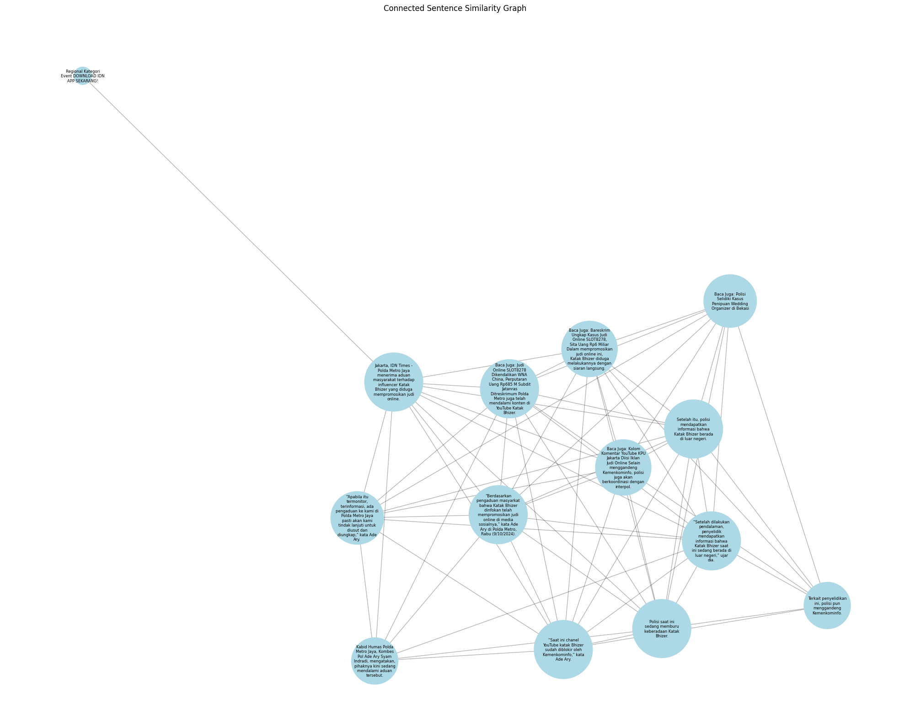

Rafly Faldiansyah Putra#
210411100063#
PPW A#
import string
import pandas as pd
import numpy as np
import requests
from bs4 import BeautifulSoup
import csv
# URL dari artikel sepak bola di IDN Times
url = 'https://www.idntimes.com/news/indonesia/irfanfathurohman/polisi-buru-keberadaan-katak-bhizer-diduga-promosi-judi-online'
# Membuat permintaan ke URL
response = requests.get(url)
# Inisialisasi data yang akan disimpan
# Mengambil ulang dan membersihkan data yang diminta
artikel_mees = []
if response.status_code == 200:
# Parsing halaman web
soup = BeautifulSoup(response.text, 'html.parser')
# Mengambil judul artikel
title = soup.find('h1').get_text().strip()
# Mengambil tanggal publikasi artikel dan membersihkan spasi berlebih
date = soup.find('time').get_text().strip()
# Mengambil isi artikel dengan membersihkan konten tambahan
content = soup.find_all('p')
article_text = '\n'.join([p.get_text().strip() for p in content if p.get_text().strip()])
# Simpan data dalam bentuk dictionary yang telah dibersihkan
artikel_mees.append({
'Title': title,
'Date': date,
'Content': article_text
})
# Membuat dataframe dari data yang telah dibersihkan
data_mees = pd.DataFrame(artikel_mees)
# Menampilkan dataframe yang bersih
data_mees
| Title | Date | Content | |
|---|---|---|---|
| 0 | Polisi Buru Keberadaan Katak Bhizer, Diduga Pr... | 09 Oct 24 | 20:34 | Regional\nKategori\nEvent\nDOWNLOAD IDN APP SE... |
import re
from sklearn.feature_extraction.text import TfidfVectorizer
from sklearn.metrics.pairwise import cosine_similarity
# Proses case folding
def casefolding(Content):
if isinstance(Content, list):
# Jika Content adalah list, terapkan case folding pada setiap elemen
return [str(item).lower() for item in Content]
else:
# Jika Content adalah string, langsung terapkan case folding
return str(Content).lower()
# Terapkan fungsi casefolding pada kolom 'Content'
data_mees['Content'] = data_mees['Content'].apply(casefolding)
data_mees.head()
| Title | Date | Content | |
|---|---|---|---|
| 0 | Polisi Buru Keberadaan Katak Bhizer, Diduga Pr... | 09 Oct 24 | 20:34 | regional\nkategori\nevent\ndownload idn app se... |
csv_filename = "artikel_mees_hilgers.csv"
data_mees.to_csv(csv_filename, index=False, encoding='utf-8')
print(f"Data berita telah disimpan ke {csv_filename}")
Data berita telah disimpan ke artikel_mees_hilgers.csv
data_mees = pd.read_csv("artikel_mees_hilgers.csv", sep=',', encoding='latin1')
data_mees.head()
| Title | Date | Content | |
|---|---|---|---|
| 0 | Polisi Buru Keberadaan Katak Bhizer, Diduga Pr... | 09 Oct 24 | 20:34 | regional\nkategori\nevent\ndownload idn app se... |
def cleansing(Content):
# Menghapus whitespace di awal dan akhir teks
Content = Content.strip()
# Menghapus tanda baca dan karakter khusus
Content = re.sub(f"[{string.punctuation}]", '', Content)
# Menghapus angka
Content = re.sub(r'\d+', '', Content)
# Menghapus huruf tunggal (opsional, tergantung kebutuhan)
Content = re.sub(r"\b[a-zA-Z]\b", "", Content)
# Menghapus karakter-karakter non-standar seperti â
Content = re.sub(r'[^\x00-\x7F]+', '', Content)
# Menghapus spasi ganda
Content = re.sub(r'\s+', ' ', Content)
return Content
# Terapkan fungsi cleansing pada kolom 'Content'
data_mees['Content'] = data_mees['Content'].apply(cleansing)
# Menampilkan 5 baris pertama
data_mees.head(5)
| Title | Date | Content | |
|---|---|---|---|
| 0 | Polisi Buru Keberadaan Katak Bhizer, Diduga Pr... | 09 Oct 24 | 20:34 | regional kategori event download idn app sekar... |
import nltk
nltk.download('punkt')
[nltk_data] Downloading package punkt to /root/nltk_data...
[nltk_data] Unzipping tokenizers/punkt.zip.
True
import nltk
from nltk.tokenize import sent_tokenize, word_tokenize
import pandas as pd # Ensure you import pandas for DataFrame usage
# Download required resources
nltk.download('punkt')
nltk.download('punkt_tab')
# Assume article_text is defined; replace with your actual text
# article_text = "Your article text goes here."
# Ekstraksi kalimat dari konten artikel
sentences = sent_tokenize(article_text)
# Tokenisasi tiap kalimat menjadi term
terms_per_sentence = [word_tokenize(sentence) for sentence in sentences]
# Membuat objek yang menyimpan hasil term dari setiap kalimat
extracted_terms = [{'Sentence': sentence, 'Terms': terms} for sentence, terms in zip(sentences, terms_per_sentence)]
# Menampilkan hasilnya sebagai dataframe
df_terms = pd.DataFrame(extracted_terms)
# Menampilkan dataframe
print(df_terms)
[nltk_data] Downloading package punkt to /root/nltk_data...
[nltk_data] Package punkt is already up-to-date!
[nltk_data] Downloading package punkt_tab to /root/nltk_data...
[nltk_data] Unzipping tokenizers/punkt_tab.zip.
Sentence \
0 Regional\nKategori\nEvent\nDOWNLOAD IDN APP SE...
1 Jakarta, IDN Times - Polda Metro Jaya menerima...
2 Kabid Humas Polda Metro Jaya, Kombes Pol Ade A...
3 “Berdasarkan pengaduan masyarkat bahwa Katak B...
4 Baca Juga: Judi Online SLOT8278 Dikendalikan W...
5 Setelah itu, polisi mendapatkan informasi bahw...
6 “Setelah dilakukan pendalaman, penyelidik mend...
7 Baca Juga: Bareskrim Ungkap Kasus Judi Online ...
8 Terkait penyelidikan ini, polisi pun menggande...
9 “Saat ini chanel YouTube katak Bhizer sudah di...
10 Baca Juga: Kolom Komentar YouTube KPU Jakarta ...
11 Polisi saat ini sedang memburu keberadaan Kata...
12 “Apabila itu termonitor, terinformasi, ada pen...
13 Baca Juga: Polisi Selidiki Kasus Penipuan Wedd...
Terms
0 [Regional, Kategori, Event, DOWNLOAD, IDN, APP...
1 [Jakarta, ,, IDN, Times, -, Polda, Metro, Jaya...
2 [Kabid, Humas, Polda, Metro, Jaya, ,, Kombes, ...
3 [“, Berdasarkan, pengaduan, masyarkat, bahwa, ...
4 [Baca, Juga, :, Judi, Online, SLOT8278, Dikend...
5 [Setelah, itu, ,, polisi, mendapatkan, informa...
6 [“, Setelah, dilakukan, pendalaman, ,, penyeli...
7 [Baca, Juga, :, Bareskrim, Ungkap, Kasus, Judi...
8 [Terkait, penyelidikan, ini, ,, polisi, pun, m...
9 [“, Saat, ini, chanel, YouTube, katak, Bhizer,...
10 [Baca, Juga, :, Kolom, Komentar, YouTube, KPU,...
11 [Polisi, saat, ini, sedang, memburu, keberadaa...
12 [“, Apabila, itu, termonitor, ,, terinformasi,...
13 [Baca, Juga, :, Polisi, Selidiki, Kasus, Penip...
csv_filename = "artikel_mees_hilgers_ekstract_term.csv"
df_terms.to_csv(csv_filename, index=False, encoding='utf-8')
print(f"Data berita telah disimpan ke {csv_filename}")
Data berita telah disimpan ke artikel_mees_hilgers_ekstract_term.csv
pip install Sastrawi
Collecting Sastrawi
Downloading Sastrawi-1.0.1-py2.py3-none-any.whl.metadata (909 bytes)
Downloading Sastrawi-1.0.1-py2.py3-none-any.whl (209 kB)
?25l ━━━━━━━━━━━━━━━━━━━━━━━━━━━━━━━━━━━━━━━━ 0.0/209.7 kB ? eta -:--:--
━━━━━━━━━━━━━━━━━━━━━━━━━━━━━━━━━━━━━━━━ 209.7/209.7 kB 7.2 MB/s eta 0:00:00
?25h
Installing collected packages: Sastrawi
Successfully installed Sastrawi-1.0.1
import pandas as pd
from sklearn.feature_extraction.text import TfidfVectorizer
from nltk.tokenize import sent_tokenize, word_tokenize
# Assuming we have the article_text
sentences = sent_tokenize(article_text)
terms_per_sentence = [word_tokenize(sentence) for sentence in sentences]
extracted_terms = [{'Sentence': sentence, 'Terms': terms} for sentence, terms in zip(sentences, terms_per_sentence)]
df_terms = pd.DataFrame(extracted_terms)
# Menggabungkan terms menjadi string untuk setiap kalimat
df_terms['Terms_String'] = df_terms['Terms'].apply(' '.join)
# Membuat TF-IDF Vectorizer
tfidf_vectorizer = TfidfVectorizer()
# Fit dan transform data
tfidf_matrix = tfidf_vectorizer.fit_transform(df_terms['Terms_String'])
# Mendapatkan nama-nama feature (terms)
feature_names = tfidf_vectorizer.get_feature_names_out()
# Membuat DataFrame untuk nilai TF-IDF
tfidf_df = pd.DataFrame(tfidf_matrix.toarray(), columns=feature_names)
# Menambahkan kolom Sentence
tfidf_df['Sentence'] = df_terms['Sentence']
# Melelehkan (melting) DataFrame untuk format yang lebih mudah dibaca
melted_tfidf = tfidf_df.melt(id_vars=['Sentence'], var_name='Term', value_name='TF-IDF')
# Menghapus baris dengan nilai TF-IDF 0
melted_tfidf = melted_tfidf[melted_tfidf['TF-IDF'] != 0]
# Mengurutkan berdasarkan nilai TF-IDF tertinggi
melted_tfidf = melted_tfidf.sort_values('TF-IDF', ascending=False)
# Menampilkan hasil
print(melted_tfidf)
Sentence Term \
795 Polisi saat ini sedang memburu keberadaan Kata... keberadaan
1005 Polisi saat ini sedang memburu keberadaan Kata... memburu
1632 Terkait penyelidikan ini, polisi pun menggande... terkait
1338 Terkait penyelidikan ini, polisi pun menggande... pun
1254 Terkait penyelidikan ini, polisi pun menggande... penyelidikan
... ... ...
320 “Apabila itu termonitor, terinformasi, ada pen... di
228 Baca Juga: Judi Online SLOT8278 Dikendalikan W... bhizer
746 Baca Juga: Judi Online SLOT8278 Dikendalikan W... katak
749 Baca Juga: Bareskrim Ungkap Kasus Judi Online ... katak
231 Baca Juga: Bareskrim Ungkap Kasus Judi Online ... bhizer
TF-IDF
795 0.471598
1005 0.471598
1632 0.440646
1338 0.440646
1254 0.440646
... ...
320 0.125899
228 0.119886
746 0.119886
749 0.116679
231 0.116679
[220 rows x 3 columns]
import numpy as np
import pandas as pd
from scipy.spatial.distance import cosine
# Assuming we have the melted_tfidf DataFrame from the previous code
# If not, uncomment and run the previous code to get melted_tfidf
# Step 1: Pivot the melted DataFrame back to wide format
tfidf_wide = melted_tfidf.pivot(index='Sentence', columns='Term', values='TF-IDF').fillna(0)
# Step 2: Calculate cosine similarity between sentences
num_sentences = len(tfidf_wide)
adjacency_matrix = np.zeros((num_sentences, num_sentences))
for i in range(num_sentences):
for j in range(i, num_sentences): # We only need to calculate upper triangle
if i == j:
adjacency_matrix[i][j] = 1.0 # Sentence is fully similar to itself
else:
similarity = 1 - cosine(tfidf_wide.iloc[i], tfidf_wide.iloc[j])
adjacency_matrix[i][j] = similarity
adjacency_matrix[j][i] = similarity # Matrix is symmetric
# Create a DataFrame for better visualization
adjacency_df = pd.DataFrame(adjacency_matrix,
index=tfidf_wide.index,
columns=tfidf_wide.index)
# Display the adjacency matrix
print("Adjacency Matrix:")
print(adjacency_df)
# Optional: You can set a threshold to consider only strong connections
threshold = 0.5
adjacency_df_thresholded = adjacency_df.where(adjacency_df > threshold, 0)
print("\nAdjacency Matrix (with threshold):")
print(adjacency_df_thresholded)
# Optional: Save to CSV
adjacency_df.to_csv('adjacency_matrix.csv')
adjacency_df_thresholded.to_csv('adjacency_matrix_thresholded.csv')
Adjacency Matrix:
Sentence Baca Juga: Bareskrim Ungkap Kasus Judi Online SLOT8278, Sita Uang Rp6 Miliar\nDalam mempromosikan judi online ini, Katak Bhizer diduga melakukannya dengan siaran langsung. \
Sentence
Baca Juga: Bareskrim Ungkap Kasus Judi Online S... 1.000000
Baca Juga: Judi Online SLOT8278 Dikendalikan WN... 0.282416
Baca Juga: Kolom Komentar YouTube KPU Jakarta D... 0.223562
Baca Juga: Polisi Selidiki Kasus Penipuan Weddi... 0.146432
Jakarta, IDN Times - Polda Metro Jaya menerima ... 0.229725
Kabid Humas Polda Metro Jaya, Kombes Pol Ade Ar... 0.000000
Polisi saat ini sedang memburu keberadaan Katak... 0.099509
Regional\nKategori\nEvent\nDOWNLOAD IDN APP SEK... 0.000000
Setelah itu, polisi mendapatkan informasi bahwa... 0.043934
Terkait penyelidikan ini, polisi pun mengganden... 0.041449
“Apabila itu termonitor, terinformasi, ada peng... 0.000000
“Berdasarkan pengaduan masyarkat bahwa Katak Bh... 0.159163
“Saat ini chanel YouTube katak Bhizer sudah dib... 0.073474
“Setelah dilakukan pendalaman, penyelidik menda... 0.059629
Sentence Baca Juga: Judi Online SLOT8278 Dikendalikan WNA China, Perputaran Uang Rp685 M\nSubdit Jatanras Ditreskrimum Polda Metro juga telah mendalami konten di YouTube Katak Bhizer. \
Sentence
Baca Juga: Bareskrim Ungkap Kasus Judi Online S... 0.282416
Baca Juga: Judi Online SLOT8278 Dikendalikan WN... 1.000000
Baca Juga: Kolom Komentar YouTube KPU Jakarta D... 0.230009
Baca Juga: Polisi Selidiki Kasus Penipuan Weddi... 0.157203
Jakarta, IDN Times - Polda Metro Jaya menerima ... 0.144489
Kabid Humas Polda Metro Jaya, Kombes Pol Ade Ar... 0.097958
Polisi saat ini sedang memburu keberadaan Katak... 0.056665
Regional\nKategori\nEvent\nDOWNLOAD IDN APP SEK... 0.000000
Setelah itu, polisi mendapatkan informasi bahwa... 0.075847
Terkait penyelidikan ini, polisi pun mengganden... 0.000000
“Apabila itu termonitor, terinformasi, ada peng... 0.059242
“Berdasarkan pengaduan masyarkat bahwa Katak Bh... 0.214164
“Saat ini chanel YouTube katak Bhizer sudah dib... 0.091242
“Setelah dilakukan pendalaman, penyelidik menda... 0.057051
Sentence Baca Juga: Kolom Komentar YouTube KPU Jakarta Diisi Iklan Judi Online\nSelain menggandeng Kemenkominfo, polisi juga akan berkoordinasi dengan interpol. \
Sentence
Baca Juga: Bareskrim Ungkap Kasus Judi Online S... 0.223562
Baca Juga: Judi Online SLOT8278 Dikendalikan WN... 0.230009
Baca Juga: Kolom Komentar YouTube KPU Jakarta D... 1.000000
Baca Juga: Polisi Selidiki Kasus Penipuan Weddi... 0.170963
Jakarta, IDN Times - Polda Metro Jaya menerima ... 0.111632
Kabid Humas Polda Metro Jaya, Kombes Pol Ade Ar... 0.000000
Polisi saat ini sedang memburu keberadaan Katak... 0.047905
Regional\nKategori\nEvent\nDOWNLOAD IDN APP SEK... 0.000000
Setelah itu, polisi mendapatkan informasi bahwa... 0.038164
Terkait penyelidikan ini, polisi pun mengganden... 0.193467
“Apabila itu termonitor, terinformasi, ada peng... 0.040573
“Berdasarkan pengaduan masyarkat bahwa Katak Bh... 0.051223
“Saat ini chanel YouTube katak Bhizer sudah dib... 0.103847
“Setelah dilakukan pendalaman, penyelidik menda... 0.000000
Sentence Baca Juga: Polisi Selidiki Kasus Penipuan Wedding Organizer di Bekasi \
Sentence
Baca Juga: Bareskrim Ungkap Kasus Judi Online S... 0.146432
Baca Juga: Judi Online SLOT8278 Dikendalikan WN... 0.157203
Baca Juga: Kolom Komentar YouTube KPU Jakarta D... 0.170963
Baca Juga: Polisi Selidiki Kasus Penipuan Weddi... 1.000000
Jakarta, IDN Times - Polda Metro Jaya menerima ... 0.000000
Kabid Humas Polda Metro Jaya, Kombes Pol Ade Ar... 0.000000
Polisi saat ini sedang memburu keberadaan Katak... 0.069738
Regional\nKategori\nEvent\nDOWNLOAD IDN APP SEK... 0.000000
Setelah itu, polisi mendapatkan informasi bahwa... 0.102535
Terkait penyelidikan ini, polisi pun mengganden... 0.065161
“Apabila itu termonitor, terinformasi, ada peng... 0.026935
“Berdasarkan pengaduan masyarkat bahwa Katak Bh... 0.063053
“Saat ini chanel YouTube katak Bhizer sudah dib... 0.000000
“Setelah dilakukan pendalaman, penyelidik menda... 0.035337
Sentence Jakarta, IDN Times - Polda Metro Jaya menerima aduan masyarakat terhadap influencer Katak Bhizer yang diduga mempromosikan judi online. \
Sentence
Baca Juga: Bareskrim Ungkap Kasus Judi Online S... 0.229725
Baca Juga: Judi Online SLOT8278 Dikendalikan WN... 0.144489
Baca Juga: Kolom Komentar YouTube KPU Jakarta D... 0.111632
Baca Juga: Polisi Selidiki Kasus Penipuan Weddi... 0.000000
Jakarta, IDN Times - Polda Metro Jaya menerima ... 1.000000
Kabid Humas Polda Metro Jaya, Kombes Pol Ade Ar... 0.161212
Polisi saat ini sedang memburu keberadaan Katak... 0.067533
Regional\nKategori\nEvent\nDOWNLOAD IDN APP SEK... 0.082216
Setelah itu, polisi mendapatkan informasi bahwa... 0.053800
Terkait penyelidikan ini, polisi pun mengganden... 0.000000
“Apabila itu termonitor, terinformasi, ada peng... 0.086047
“Berdasarkan pengaduan masyarkat bahwa Katak Bh... 0.194907
“Saat ini chanel YouTube katak Bhizer sudah dib... 0.049864
“Setelah dilakukan pendalaman, penyelidik menda... 0.040468
Sentence Kabid Humas Polda Metro Jaya, Kombes Pol Ade Ary Syam Indradi, mengatakan, pihaknya kini sedang mendalami aduan tersebut. \
Sentence
Baca Juga: Bareskrim Ungkap Kasus Judi Online S... 0.000000
Baca Juga: Judi Online SLOT8278 Dikendalikan WN... 0.097958
Baca Juga: Kolom Komentar YouTube KPU Jakarta D... 0.000000
Baca Juga: Polisi Selidiki Kasus Penipuan Weddi... 0.000000
Jakarta, IDN Times - Polda Metro Jaya menerima ... 0.161212
Kabid Humas Polda Metro Jaya, Kombes Pol Ade Ar... 1.000000
Polisi saat ini sedang memburu keberadaan Katak... 0.073545
Regional\nKategori\nEvent\nDOWNLOAD IDN APP SEK... 0.000000
Setelah itu, polisi mendapatkan informasi bahwa... 0.000000
Terkait penyelidikan ini, polisi pun mengganden... 0.000000
“Apabila itu termonitor, terinformasi, ada peng... 0.134250
“Berdasarkan pengaduan masyarkat bahwa Katak Bh... 0.117819
“Saat ini chanel YouTube katak Bhizer sudah dib... 0.088733
“Setelah dilakukan pendalaman, penyelidik menda... 0.044071
Sentence Polisi saat ini sedang memburu keberadaan Katak Bhizer. \
Sentence
Baca Juga: Bareskrim Ungkap Kasus Judi Online S... 0.099509
Baca Juga: Judi Online SLOT8278 Dikendalikan WN... 0.056665
Baca Juga: Kolom Komentar YouTube KPU Jakarta D... 0.047905
Baca Juga: Polisi Selidiki Kasus Penipuan Weddi... 0.069738
Jakarta, IDN Times - Polda Metro Jaya menerima ... 0.067533
Kabid Humas Polda Metro Jaya, Kombes Pol Ade Ar... 0.073545
Polisi saat ini sedang memburu keberadaan Katak... 1.000000
Regional\nKategori\nEvent\nDOWNLOAD IDN APP SEK... 0.000000
Setelah itu, polisi mendapatkan informasi bahwa... 0.160566
Terkait penyelidikan ini, polisi pun mengganden... 0.167907
“Apabila itu termonitor, terinformasi, ada peng... 0.000000
“Berdasarkan pengaduan masyarkat bahwa Katak Bh... 0.059718
“Saat ini chanel YouTube katak Bhizer sudah dib... 0.246203
“Setelah dilakukan pendalaman, penyelidik menda... 0.278849
Sentence Regional\nKategori\nEvent\nDOWNLOAD IDN APP SEKARANG! \
Sentence
Baca Juga: Bareskrim Ungkap Kasus Judi Online S... 0.000000
Baca Juga: Judi Online SLOT8278 Dikendalikan WN... 0.000000
Baca Juga: Kolom Komentar YouTube KPU Jakarta D... 0.000000
Baca Juga: Polisi Selidiki Kasus Penipuan Weddi... 0.000000
Jakarta, IDN Times - Polda Metro Jaya menerima ... 0.082216
Kabid Humas Polda Metro Jaya, Kombes Pol Ade Ar... 0.000000
Polisi saat ini sedang memburu keberadaan Katak... 0.000000
Regional\nKategori\nEvent\nDOWNLOAD IDN APP SEK... 1.000000
Setelah itu, polisi mendapatkan informasi bahwa... 0.000000
Terkait penyelidikan ini, polisi pun mengganden... 0.000000
“Apabila itu termonitor, terinformasi, ada peng... 0.000000
“Berdasarkan pengaduan masyarkat bahwa Katak Bh... 0.000000
“Saat ini chanel YouTube katak Bhizer sudah dib... 0.000000
“Setelah dilakukan pendalaman, penyelidik menda... 0.000000
Sentence Setelah itu, polisi mendapatkan informasi bahwa Katak Bhizer berada di luar negeri. \
Sentence
Baca Juga: Bareskrim Ungkap Kasus Judi Online S... 0.043934
Baca Juga: Judi Online SLOT8278 Dikendalikan WN... 0.075847
Baca Juga: Kolom Komentar YouTube KPU Jakarta D... 0.038164
Baca Juga: Polisi Selidiki Kasus Penipuan Weddi... 0.102535
Jakarta, IDN Times - Polda Metro Jaya menerima ... 0.053800
Kabid Humas Polda Metro Jaya, Kombes Pol Ade Ar... 0.000000
Polisi saat ini sedang memburu keberadaan Katak... 0.160566
Regional\nKategori\nEvent\nDOWNLOAD IDN APP SEK... 0.000000
Setelah itu, polisi mendapatkan informasi bahwa... 1.000000
Terkait penyelidikan ini, polisi pun mengganden... 0.066882
“Apabila itu termonitor, terinformasi, ada peng... 0.088270
“Berdasarkan pengaduan masyarkat bahwa Katak Bh... 0.168468
“Saat ini chanel YouTube katak Bhizer sudah dib... 0.065704
“Setelah dilakukan pendalaman, penyelidik menda... 0.629766
Sentence Terkait penyelidikan ini, polisi pun menggandeng Kemenkominfo. \
Sentence
Baca Juga: Bareskrim Ungkap Kasus Judi Online S... 0.041449
Baca Juga: Judi Online SLOT8278 Dikendalikan WN... 0.000000
Baca Juga: Kolom Komentar YouTube KPU Jakarta D... 0.193467
Baca Juga: Polisi Selidiki Kasus Penipuan Weddi... 0.065161
Jakarta, IDN Times - Polda Metro Jaya menerima ... 0.000000
Kabid Humas Polda Metro Jaya, Kombes Pol Ade Ar... 0.000000
Polisi saat ini sedang memburu keberadaan Katak... 0.167907
Regional\nKategori\nEvent\nDOWNLOAD IDN APP SEK... 0.000000
Setelah itu, polisi mendapatkan informasi bahwa... 0.066882
Terkait penyelidikan ini, polisi pun mengganden... 1.000000
“Apabila itu termonitor, terinformasi, ada peng... 0.000000
“Berdasarkan pengaduan masyarkat bahwa Katak Bh... 0.000000
“Saat ini chanel YouTube katak Bhizer sudah dib... 0.152983
“Setelah dilakukan pendalaman, penyelidik menda... 0.050308
Sentence “Apabila itu termonitor, terinformasi, ada pengaduan ke kami di Polda Metro Jaya pasti akan kami tindak lanjuti untuk diusut dan diungkap,” kata Ade Ary. \
Sentence
Baca Juga: Bareskrim Ungkap Kasus Judi Online S... 0.000000
Baca Juga: Judi Online SLOT8278 Dikendalikan WN... 0.059242
Baca Juga: Kolom Komentar YouTube KPU Jakarta D... 0.040573
Baca Juga: Polisi Selidiki Kasus Penipuan Weddi... 0.026935
Jakarta, IDN Times - Polda Metro Jaya menerima ... 0.086047
Kabid Humas Polda Metro Jaya, Kombes Pol Ade Ar... 0.134250
Polisi saat ini sedang memburu keberadaan Katak... 0.000000
Regional\nKategori\nEvent\nDOWNLOAD IDN APP SEK... 0.000000
Setelah itu, polisi mendapatkan informasi bahwa... 0.088270
Terkait penyelidikan ini, polisi pun mengganden... 0.000000
“Apabila itu termonitor, terinformasi, ada peng... 1.000000
“Berdasarkan pengaduan masyarkat bahwa Katak Bh... 0.206508
“Saat ini chanel YouTube katak Bhizer sudah dib... 0.117166
“Setelah dilakukan pendalaman, penyelidik menda... 0.020795
Sentence “Berdasarkan pengaduan masyarkat bahwa Katak Bhizer dinfokan telah mempromosikan judi online di media sosialnya,” kata Ade Ary di Polda Metro, Rabu (9/10/2024). \
Sentence
Baca Juga: Bareskrim Ungkap Kasus Judi Online S... 0.159163
Baca Juga: Judi Online SLOT8278 Dikendalikan WN... 0.214164
Baca Juga: Kolom Komentar YouTube KPU Jakarta D... 0.051223
Baca Juga: Polisi Selidiki Kasus Penipuan Weddi... 0.063053
Jakarta, IDN Times - Polda Metro Jaya menerima ... 0.194907
Kabid Humas Polda Metro Jaya, Kombes Pol Ade Ar... 0.117819
Polisi saat ini sedang memburu keberadaan Katak... 0.059718
Regional\nKategori\nEvent\nDOWNLOAD IDN APP SEK... 0.000000
Setelah itu, polisi mendapatkan informasi bahwa... 0.168468
Terkait penyelidikan ini, polisi pun mengganden... 0.000000
“Apabila itu termonitor, terinformasi, ada peng... 0.206508
“Berdasarkan pengaduan masyarkat bahwa Katak Bh... 1.000000
“Saat ini chanel YouTube katak Bhizer sudah dib... 0.181235
“Setelah dilakukan pendalaman, penyelidik menda... 0.126720
Sentence “Saat ini chanel YouTube katak Bhizer sudah diblokir oleh Kemenkominfo,” kata Ade Ary. \
Sentence
Baca Juga: Bareskrim Ungkap Kasus Judi Online S... 0.073474
Baca Juga: Judi Online SLOT8278 Dikendalikan WN... 0.091242
Baca Juga: Kolom Komentar YouTube KPU Jakarta D... 0.103847
Baca Juga: Polisi Selidiki Kasus Penipuan Weddi... 0.000000
Jakarta, IDN Times - Polda Metro Jaya menerima ... 0.049864
Kabid Humas Polda Metro Jaya, Kombes Pol Ade Ar... 0.088733
Polisi saat ini sedang memburu keberadaan Katak... 0.246203
Regional\nKategori\nEvent\nDOWNLOAD IDN APP SEK... 0.000000
Setelah itu, polisi mendapatkan informasi bahwa... 0.065704
Terkait penyelidikan ini, polisi pun mengganden... 0.152983
“Apabila itu termonitor, terinformasi, ada peng... 0.117166
“Berdasarkan pengaduan masyarkat bahwa Katak Bh... 0.181235
“Saat ini chanel YouTube katak Bhizer sudah dib... 1.000000
“Setelah dilakukan pendalaman, penyelidik menda... 0.147534
Sentence “Setelah dilakukan pendalaman, penyelidik mendapatkan informasi bahwa Katak Bhizer saat ini sedang berada di luar negeri,” ujar dia.
Sentence
Baca Juga: Bareskrim Ungkap Kasus Judi Online S... 0.059629
Baca Juga: Judi Online SLOT8278 Dikendalikan WN... 0.057051
Baca Juga: Kolom Komentar YouTube KPU Jakarta D... 0.000000
Baca Juga: Polisi Selidiki Kasus Penipuan Weddi... 0.035337
Jakarta, IDN Times - Polda Metro Jaya menerima ... 0.040468
Kabid Humas Polda Metro Jaya, Kombes Pol Ade Ar... 0.044071
Polisi saat ini sedang memburu keberadaan Katak... 0.278849
Regional\nKategori\nEvent\nDOWNLOAD IDN APP SEK... 0.000000
Setelah itu, polisi mendapatkan informasi bahwa... 0.629766
Terkait penyelidikan ini, polisi pun mengganden... 0.050308
“Apabila itu termonitor, terinformasi, ada peng... 0.020795
“Berdasarkan pengaduan masyarkat bahwa Katak Bh... 0.126720
“Saat ini chanel YouTube katak Bhizer sudah dib... 0.147534
“Setelah dilakukan pendalaman, penyelidik menda... 1.000000
Adjacency Matrix (with threshold):
Sentence Baca Juga: Bareskrim Ungkap Kasus Judi Online SLOT8278, Sita Uang Rp6 Miliar\nDalam mempromosikan judi online ini, Katak Bhizer diduga melakukannya dengan siaran langsung. \
Sentence
Baca Juga: Bareskrim Ungkap Kasus Judi Online S... 1.0
Baca Juga: Judi Online SLOT8278 Dikendalikan WN... 0.0
Baca Juga: Kolom Komentar YouTube KPU Jakarta D... 0.0
Baca Juga: Polisi Selidiki Kasus Penipuan Weddi... 0.0
Jakarta, IDN Times - Polda Metro Jaya menerima ... 0.0
Kabid Humas Polda Metro Jaya, Kombes Pol Ade Ar... 0.0
Polisi saat ini sedang memburu keberadaan Katak... 0.0
Regional\nKategori\nEvent\nDOWNLOAD IDN APP SEK... 0.0
Setelah itu, polisi mendapatkan informasi bahwa... 0.0
Terkait penyelidikan ini, polisi pun mengganden... 0.0
“Apabila itu termonitor, terinformasi, ada peng... 0.0
“Berdasarkan pengaduan masyarkat bahwa Katak Bh... 0.0
“Saat ini chanel YouTube katak Bhizer sudah dib... 0.0
“Setelah dilakukan pendalaman, penyelidik menda... 0.0
Sentence Baca Juga: Judi Online SLOT8278 Dikendalikan WNA China, Perputaran Uang Rp685 M\nSubdit Jatanras Ditreskrimum Polda Metro juga telah mendalami konten di YouTube Katak Bhizer. \
Sentence
Baca Juga: Bareskrim Ungkap Kasus Judi Online S... 0.0
Baca Juga: Judi Online SLOT8278 Dikendalikan WN... 1.0
Baca Juga: Kolom Komentar YouTube KPU Jakarta D... 0.0
Baca Juga: Polisi Selidiki Kasus Penipuan Weddi... 0.0
Jakarta, IDN Times - Polda Metro Jaya menerima ... 0.0
Kabid Humas Polda Metro Jaya, Kombes Pol Ade Ar... 0.0
Polisi saat ini sedang memburu keberadaan Katak... 0.0
Regional\nKategori\nEvent\nDOWNLOAD IDN APP SEK... 0.0
Setelah itu, polisi mendapatkan informasi bahwa... 0.0
Terkait penyelidikan ini, polisi pun mengganden... 0.0
“Apabila itu termonitor, terinformasi, ada peng... 0.0
“Berdasarkan pengaduan masyarkat bahwa Katak Bh... 0.0
“Saat ini chanel YouTube katak Bhizer sudah dib... 0.0
“Setelah dilakukan pendalaman, penyelidik menda... 0.0
Sentence Baca Juga: Kolom Komentar YouTube KPU Jakarta Diisi Iklan Judi Online\nSelain menggandeng Kemenkominfo, polisi juga akan berkoordinasi dengan interpol. \
Sentence
Baca Juga: Bareskrim Ungkap Kasus Judi Online S... 0.0
Baca Juga: Judi Online SLOT8278 Dikendalikan WN... 0.0
Baca Juga: Kolom Komentar YouTube KPU Jakarta D... 1.0
Baca Juga: Polisi Selidiki Kasus Penipuan Weddi... 0.0
Jakarta, IDN Times - Polda Metro Jaya menerima ... 0.0
Kabid Humas Polda Metro Jaya, Kombes Pol Ade Ar... 0.0
Polisi saat ini sedang memburu keberadaan Katak... 0.0
Regional\nKategori\nEvent\nDOWNLOAD IDN APP SEK... 0.0
Setelah itu, polisi mendapatkan informasi bahwa... 0.0
Terkait penyelidikan ini, polisi pun mengganden... 0.0
“Apabila itu termonitor, terinformasi, ada peng... 0.0
“Berdasarkan pengaduan masyarkat bahwa Katak Bh... 0.0
“Saat ini chanel YouTube katak Bhizer sudah dib... 0.0
“Setelah dilakukan pendalaman, penyelidik menda... 0.0
Sentence Baca Juga: Polisi Selidiki Kasus Penipuan Wedding Organizer di Bekasi \
Sentence
Baca Juga: Bareskrim Ungkap Kasus Judi Online S... 0.0
Baca Juga: Judi Online SLOT8278 Dikendalikan WN... 0.0
Baca Juga: Kolom Komentar YouTube KPU Jakarta D... 0.0
Baca Juga: Polisi Selidiki Kasus Penipuan Weddi... 1.0
Jakarta, IDN Times - Polda Metro Jaya menerima ... 0.0
Kabid Humas Polda Metro Jaya, Kombes Pol Ade Ar... 0.0
Polisi saat ini sedang memburu keberadaan Katak... 0.0
Regional\nKategori\nEvent\nDOWNLOAD IDN APP SEK... 0.0
Setelah itu, polisi mendapatkan informasi bahwa... 0.0
Terkait penyelidikan ini, polisi pun mengganden... 0.0
“Apabila itu termonitor, terinformasi, ada peng... 0.0
“Berdasarkan pengaduan masyarkat bahwa Katak Bh... 0.0
“Saat ini chanel YouTube katak Bhizer sudah dib... 0.0
“Setelah dilakukan pendalaman, penyelidik menda... 0.0
Sentence Jakarta, IDN Times - Polda Metro Jaya menerima aduan masyarakat terhadap influencer Katak Bhizer yang diduga mempromosikan judi online. \
Sentence
Baca Juga: Bareskrim Ungkap Kasus Judi Online S... 0.0
Baca Juga: Judi Online SLOT8278 Dikendalikan WN... 0.0
Baca Juga: Kolom Komentar YouTube KPU Jakarta D... 0.0
Baca Juga: Polisi Selidiki Kasus Penipuan Weddi... 0.0
Jakarta, IDN Times - Polda Metro Jaya menerima ... 1.0
Kabid Humas Polda Metro Jaya, Kombes Pol Ade Ar... 0.0
Polisi saat ini sedang memburu keberadaan Katak... 0.0
Regional\nKategori\nEvent\nDOWNLOAD IDN APP SEK... 0.0
Setelah itu, polisi mendapatkan informasi bahwa... 0.0
Terkait penyelidikan ini, polisi pun mengganden... 0.0
“Apabila itu termonitor, terinformasi, ada peng... 0.0
“Berdasarkan pengaduan masyarkat bahwa Katak Bh... 0.0
“Saat ini chanel YouTube katak Bhizer sudah dib... 0.0
“Setelah dilakukan pendalaman, penyelidik menda... 0.0
Sentence Kabid Humas Polda Metro Jaya, Kombes Pol Ade Ary Syam Indradi, mengatakan, pihaknya kini sedang mendalami aduan tersebut. \
Sentence
Baca Juga: Bareskrim Ungkap Kasus Judi Online S... 0.0
Baca Juga: Judi Online SLOT8278 Dikendalikan WN... 0.0
Baca Juga: Kolom Komentar YouTube KPU Jakarta D... 0.0
Baca Juga: Polisi Selidiki Kasus Penipuan Weddi... 0.0
Jakarta, IDN Times - Polda Metro Jaya menerima ... 0.0
Kabid Humas Polda Metro Jaya, Kombes Pol Ade Ar... 1.0
Polisi saat ini sedang memburu keberadaan Katak... 0.0
Regional\nKategori\nEvent\nDOWNLOAD IDN APP SEK... 0.0
Setelah itu, polisi mendapatkan informasi bahwa... 0.0
Terkait penyelidikan ini, polisi pun mengganden... 0.0
“Apabila itu termonitor, terinformasi, ada peng... 0.0
“Berdasarkan pengaduan masyarkat bahwa Katak Bh... 0.0
“Saat ini chanel YouTube katak Bhizer sudah dib... 0.0
“Setelah dilakukan pendalaman, penyelidik menda... 0.0
Sentence Polisi saat ini sedang memburu keberadaan Katak Bhizer. \
Sentence
Baca Juga: Bareskrim Ungkap Kasus Judi Online S... 0.0
Baca Juga: Judi Online SLOT8278 Dikendalikan WN... 0.0
Baca Juga: Kolom Komentar YouTube KPU Jakarta D... 0.0
Baca Juga: Polisi Selidiki Kasus Penipuan Weddi... 0.0
Jakarta, IDN Times - Polda Metro Jaya menerima ... 0.0
Kabid Humas Polda Metro Jaya, Kombes Pol Ade Ar... 0.0
Polisi saat ini sedang memburu keberadaan Katak... 1.0
Regional\nKategori\nEvent\nDOWNLOAD IDN APP SEK... 0.0
Setelah itu, polisi mendapatkan informasi bahwa... 0.0
Terkait penyelidikan ini, polisi pun mengganden... 0.0
“Apabila itu termonitor, terinformasi, ada peng... 0.0
“Berdasarkan pengaduan masyarkat bahwa Katak Bh... 0.0
“Saat ini chanel YouTube katak Bhizer sudah dib... 0.0
“Setelah dilakukan pendalaman, penyelidik menda... 0.0
Sentence Regional\nKategori\nEvent\nDOWNLOAD IDN APP SEKARANG! \
Sentence
Baca Juga: Bareskrim Ungkap Kasus Judi Online S... 0.0
Baca Juga: Judi Online SLOT8278 Dikendalikan WN... 0.0
Baca Juga: Kolom Komentar YouTube KPU Jakarta D... 0.0
Baca Juga: Polisi Selidiki Kasus Penipuan Weddi... 0.0
Jakarta, IDN Times - Polda Metro Jaya menerima ... 0.0
Kabid Humas Polda Metro Jaya, Kombes Pol Ade Ar... 0.0
Polisi saat ini sedang memburu keberadaan Katak... 0.0
Regional\nKategori\nEvent\nDOWNLOAD IDN APP SEK... 1.0
Setelah itu, polisi mendapatkan informasi bahwa... 0.0
Terkait penyelidikan ini, polisi pun mengganden... 0.0
“Apabila itu termonitor, terinformasi, ada peng... 0.0
“Berdasarkan pengaduan masyarkat bahwa Katak Bh... 0.0
“Saat ini chanel YouTube katak Bhizer sudah dib... 0.0
“Setelah dilakukan pendalaman, penyelidik menda... 0.0
Sentence Setelah itu, polisi mendapatkan informasi bahwa Katak Bhizer berada di luar negeri. \
Sentence
Baca Juga: Bareskrim Ungkap Kasus Judi Online S... 0.000000
Baca Juga: Judi Online SLOT8278 Dikendalikan WN... 0.000000
Baca Juga: Kolom Komentar YouTube KPU Jakarta D... 0.000000
Baca Juga: Polisi Selidiki Kasus Penipuan Weddi... 0.000000
Jakarta, IDN Times - Polda Metro Jaya menerima ... 0.000000
Kabid Humas Polda Metro Jaya, Kombes Pol Ade Ar... 0.000000
Polisi saat ini sedang memburu keberadaan Katak... 0.000000
Regional\nKategori\nEvent\nDOWNLOAD IDN APP SEK... 0.000000
Setelah itu, polisi mendapatkan informasi bahwa... 1.000000
Terkait penyelidikan ini, polisi pun mengganden... 0.000000
“Apabila itu termonitor, terinformasi, ada peng... 0.000000
“Berdasarkan pengaduan masyarkat bahwa Katak Bh... 0.000000
“Saat ini chanel YouTube katak Bhizer sudah dib... 0.000000
“Setelah dilakukan pendalaman, penyelidik menda... 0.629766
Sentence Terkait penyelidikan ini, polisi pun menggandeng Kemenkominfo. \
Sentence
Baca Juga: Bareskrim Ungkap Kasus Judi Online S... 0.0
Baca Juga: Judi Online SLOT8278 Dikendalikan WN... 0.0
Baca Juga: Kolom Komentar YouTube KPU Jakarta D... 0.0
Baca Juga: Polisi Selidiki Kasus Penipuan Weddi... 0.0
Jakarta, IDN Times - Polda Metro Jaya menerima ... 0.0
Kabid Humas Polda Metro Jaya, Kombes Pol Ade Ar... 0.0
Polisi saat ini sedang memburu keberadaan Katak... 0.0
Regional\nKategori\nEvent\nDOWNLOAD IDN APP SEK... 0.0
Setelah itu, polisi mendapatkan informasi bahwa... 0.0
Terkait penyelidikan ini, polisi pun mengganden... 1.0
“Apabila itu termonitor, terinformasi, ada peng... 0.0
“Berdasarkan pengaduan masyarkat bahwa Katak Bh... 0.0
“Saat ini chanel YouTube katak Bhizer sudah dib... 0.0
“Setelah dilakukan pendalaman, penyelidik menda... 0.0
Sentence “Apabila itu termonitor, terinformasi, ada pengaduan ke kami di Polda Metro Jaya pasti akan kami tindak lanjuti untuk diusut dan diungkap,” kata Ade Ary. \
Sentence
Baca Juga: Bareskrim Ungkap Kasus Judi Online S... 0.0
Baca Juga: Judi Online SLOT8278 Dikendalikan WN... 0.0
Baca Juga: Kolom Komentar YouTube KPU Jakarta D... 0.0
Baca Juga: Polisi Selidiki Kasus Penipuan Weddi... 0.0
Jakarta, IDN Times - Polda Metro Jaya menerima ... 0.0
Kabid Humas Polda Metro Jaya, Kombes Pol Ade Ar... 0.0
Polisi saat ini sedang memburu keberadaan Katak... 0.0
Regional\nKategori\nEvent\nDOWNLOAD IDN APP SEK... 0.0
Setelah itu, polisi mendapatkan informasi bahwa... 0.0
Terkait penyelidikan ini, polisi pun mengganden... 0.0
“Apabila itu termonitor, terinformasi, ada peng... 1.0
“Berdasarkan pengaduan masyarkat bahwa Katak Bh... 0.0
“Saat ini chanel YouTube katak Bhizer sudah dib... 0.0
“Setelah dilakukan pendalaman, penyelidik menda... 0.0
Sentence “Berdasarkan pengaduan masyarkat bahwa Katak Bhizer dinfokan telah mempromosikan judi online di media sosialnya,” kata Ade Ary di Polda Metro, Rabu (9/10/2024). \
Sentence
Baca Juga: Bareskrim Ungkap Kasus Judi Online S... 0.0
Baca Juga: Judi Online SLOT8278 Dikendalikan WN... 0.0
Baca Juga: Kolom Komentar YouTube KPU Jakarta D... 0.0
Baca Juga: Polisi Selidiki Kasus Penipuan Weddi... 0.0
Jakarta, IDN Times - Polda Metro Jaya menerima ... 0.0
Kabid Humas Polda Metro Jaya, Kombes Pol Ade Ar... 0.0
Polisi saat ini sedang memburu keberadaan Katak... 0.0
Regional\nKategori\nEvent\nDOWNLOAD IDN APP SEK... 0.0
Setelah itu, polisi mendapatkan informasi bahwa... 0.0
Terkait penyelidikan ini, polisi pun mengganden... 0.0
“Apabila itu termonitor, terinformasi, ada peng... 0.0
“Berdasarkan pengaduan masyarkat bahwa Katak Bh... 1.0
“Saat ini chanel YouTube katak Bhizer sudah dib... 0.0
“Setelah dilakukan pendalaman, penyelidik menda... 0.0
Sentence “Saat ini chanel YouTube katak Bhizer sudah diblokir oleh Kemenkominfo,” kata Ade Ary. \
Sentence
Baca Juga: Bareskrim Ungkap Kasus Judi Online S... 0.0
Baca Juga: Judi Online SLOT8278 Dikendalikan WN... 0.0
Baca Juga: Kolom Komentar YouTube KPU Jakarta D... 0.0
Baca Juga: Polisi Selidiki Kasus Penipuan Weddi... 0.0
Jakarta, IDN Times - Polda Metro Jaya menerima ... 0.0
Kabid Humas Polda Metro Jaya, Kombes Pol Ade Ar... 0.0
Polisi saat ini sedang memburu keberadaan Katak... 0.0
Regional\nKategori\nEvent\nDOWNLOAD IDN APP SEK... 0.0
Setelah itu, polisi mendapatkan informasi bahwa... 0.0
Terkait penyelidikan ini, polisi pun mengganden... 0.0
“Apabila itu termonitor, terinformasi, ada peng... 0.0
“Berdasarkan pengaduan masyarkat bahwa Katak Bh... 0.0
“Saat ini chanel YouTube katak Bhizer sudah dib... 1.0
“Setelah dilakukan pendalaman, penyelidik menda... 0.0
Sentence “Setelah dilakukan pendalaman, penyelidik mendapatkan informasi bahwa Katak Bhizer saat ini sedang berada di luar negeri,” ujar dia.
Sentence
Baca Juga: Bareskrim Ungkap Kasus Judi Online S... 0.000000
Baca Juga: Judi Online SLOT8278 Dikendalikan WN... 0.000000
Baca Juga: Kolom Komentar YouTube KPU Jakarta D... 0.000000
Baca Juga: Polisi Selidiki Kasus Penipuan Weddi... 0.000000
Jakarta, IDN Times - Polda Metro Jaya menerima ... 0.000000
Kabid Humas Polda Metro Jaya, Kombes Pol Ade Ar... 0.000000
Polisi saat ini sedang memburu keberadaan Katak... 0.000000
Regional\nKategori\nEvent\nDOWNLOAD IDN APP SEK... 0.000000
Setelah itu, polisi mendapatkan informasi bahwa... 0.629766
Terkait penyelidikan ini, polisi pun mengganden... 0.000000
“Apabila itu termonitor, terinformasi, ada peng... 0.000000
“Berdasarkan pengaduan masyarkat bahwa Katak Bh... 0.000000
“Saat ini chanel YouTube katak Bhizer sudah dib... 0.000000
“Setelah dilakukan pendalaman, penyelidik menda... 1.000000
import numpy as np
import pandas as pd
import networkx as nx
import matplotlib.pyplot as plt
from sklearn.metrics.pairwise import cosine_similarity
import textwrap
# Assuming we have the tfidf_wide DataFrame and original sentences from previous steps
# If not, you need to run the TF-IDF calculation code first
# Calculate cosine similarity
cosine_sim = cosine_similarity(tfidf_wide)
# Create a DataFrame for the similarity matrix
similarity_df = pd.DataFrame(cosine_sim, index=tfidf_wide.index, columns=tfidf_wide.index)
# Create a graph from the similarity matrix
G = nx.from_pandas_adjacency(similarity_df)
# Remove self-loops
G.remove_edges_from(nx.selfloop_edges(G))
# Function to get the largest connected component
def get_largest_component(G):
return max(nx.connected_components(G), key=len)
# Ensure the graph is connected
while not nx.is_connected(G):
largest_component = get_largest_component(G)
isolated_nodes = set(G.nodes()) - set(largest_component)
if not isolated_nodes:
break
for node in isolated_nodes:
similarities = [(other_node, similarity_df.loc[node, other_node])
for other_node in largest_component]
most_similar_node = max(similarities, key=lambda x: x[1])[0]
G.add_edge(node, most_similar_node)
# Function to wrap text
def wrap_text(text, width=20):
return '\n'.join(textwrap.wrap(text, width=width))
# Prepare labels (wrapped sentences)
labels = {node: wrap_text(node) for node in G.nodes()}
# Now let's visualize the graph
plt.figure(figsize=(20, 16)) # Increased figure size
pos = nx.spring_layout(G, k=0.5, iterations=50)
# Calculate node sizes based on degree centrality
degree_centrality = nx.degree_centrality(G)
node_sizes = [v * 10000 for v in degree_centrality.values()] # Increased node sizes
# Draw the graph
nx.draw_networkx_nodes(G, pos, node_size=node_sizes, node_color='lightblue')
nx.draw_networkx_edges(G, pos, alpha=0.3)
# Add labels
nx.draw_networkx_labels(G, pos, labels, font_size=6) # Reduced font size
plt.title("Connected Sentence Similarity Graph")
plt.axis('off')
plt.tight_layout()
# Save the graph as an image
plt.savefig('connected_sentence_similarity_graph.png', dpi=300, bbox_inches='tight')
# Show the plot
plt.show()
# Print some information about the graph
print(f"Number of nodes: {G.number_of_nodes()}")
print(f"Number of edges: {G.number_of_edges()}")
print(f"Is the graph connected? {nx.is_connected(G)}")
# Calculate centrality measures
closeness_centrality = nx.closeness_centrality(G)
betweenness_centrality = nx.betweenness_centrality(G)
# Create a DataFrame with centrality measures
centrality_data = []
for node in G.nodes():
centrality_data.append({
'Sentence': node,
'Degree Centrality': degree_centrality[node],
'Closeness Centrality': closeness_centrality[node],
'Betweenness Centrality': betweenness_centrality[node]
})
centrality_df = pd.DataFrame(centrality_data)
# Sort by Degree Centrality
centrality_df = centrality_df.sort_values('Degree Centrality', ascending=False)
print("\nCentrality Measures:")
print(centrality_df)
# Save centrality measures to CSV
centrality_df.to_csv('centrality_measures_with_sentences.csv', index=False)
# Optionally, print the top 5 sentences by each centrality measure
print("\nTop 5 sentences by Degree Centrality:")
print(centrality_df.nlargest(5, 'Degree Centrality')[['Sentence', 'Degree Centrality']])
print("\nTop 5 sentences by Closeness Centrality:")
print(centrality_df.nlargest(5, 'Closeness Centrality')[['Sentence', 'Closeness Centrality']])
print("\nTop 5 sentences by Betweenness Centrality:")
print(centrality_df.nlargest(5, 'Betweenness Centrality')[['Sentence', 'Betweenness Centrality']])

Number of nodes: 14
Number of edges: 65
Is the graph connected? True
Centrality Measures:
Sentence Degree Centrality \
1 Baca Juga: Judi Online SLOT8278 Dikendalikan W... 0.846154
4 Jakarta, IDN Times - Polda Metro Jaya menerima... 0.846154
6 Polisi saat ini sedang memburu keberadaan Kata... 0.846154
8 Setelah itu, polisi mendapatkan informasi bahw... 0.846154
11 “Berdasarkan pengaduan masyarkat bahwa Katak B... 0.846154
12 “Saat ini chanel YouTube katak Bhizer sudah di... 0.846154
13 “Setelah dilakukan pendalaman, penyelidik mend... 0.846154
0 Baca Juga: Bareskrim Ungkap Kasus Judi Online ... 0.769231
2 Baca Juga: Kolom Komentar YouTube KPU Jakarta ... 0.769231
3 Baca Juga: Polisi Selidiki Kasus Penipuan Wedd... 0.692308
10 “Apabila itu termonitor, terinformasi, ada pen... 0.692308
5 Kabid Humas Polda Metro Jaya, Kombes Pol Ade A... 0.538462
9 Terkait penyelidikan ini, polisi pun menggande... 0.538462
7 Regional\nKategori\nEvent\nDOWNLOAD IDN APP SE... 0.076923
Closeness Centrality Betweenness Centrality
1 0.866667 0.017608
4 0.866667 0.164260
6 0.866667 0.026791
8 0.866667 0.019439
11 0.866667 0.017608
12 0.866667 0.025188
13 0.866667 0.028963
0 0.812500 0.013848
2 0.812500 0.018157
3 0.722222 0.010536
10 0.764706 0.012444
5 0.684211 0.001425
9 0.650000 0.002707
7 0.481481 0.000000
Top 5 sentences by Degree Centrality:
Sentence Degree Centrality
1 Baca Juga: Judi Online SLOT8278 Dikendalikan W... 0.846154
4 Jakarta, IDN Times - Polda Metro Jaya menerima... 0.846154
6 Polisi saat ini sedang memburu keberadaan Kata... 0.846154
8 Setelah itu, polisi mendapatkan informasi bahw... 0.846154
11 “Berdasarkan pengaduan masyarkat bahwa Katak B... 0.846154
Top 5 sentences by Closeness Centrality:
Sentence Closeness Centrality
1 Baca Juga: Judi Online SLOT8278 Dikendalikan W... 0.866667
4 Jakarta, IDN Times - Polda Metro Jaya menerima... 0.866667
6 Polisi saat ini sedang memburu keberadaan Kata... 0.866667
8 Setelah itu, polisi mendapatkan informasi bahw... 0.866667
11 “Berdasarkan pengaduan masyarkat bahwa Katak B... 0.866667
Top 5 sentences by Betweenness Centrality:
Sentence Betweenness Centrality
4 Jakarta, IDN Times - Polda Metro Jaya menerima... 0.164260
13 “Setelah dilakukan pendalaman, penyelidik mend... 0.028963
6 Polisi saat ini sedang memburu keberadaan Kata... 0.026791
12 “Saat ini chanel YouTube katak Bhizer sudah di... 0.025188
8 Setelah itu, polisi mendapatkan informasi bahw... 0.019439